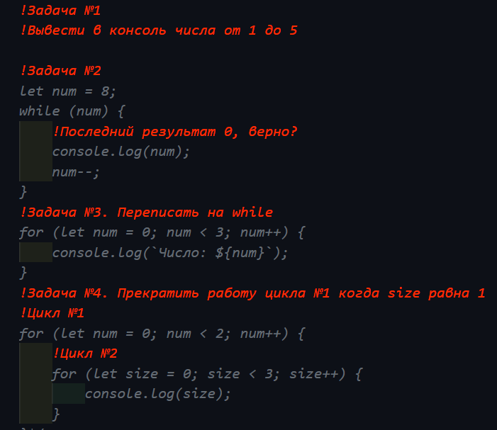

Цикли в Javascript
Варіант №1.
Варіант №2.Невірно. Значення 0 (False) зупинить інтернацию і не виведе (0)
Варіант №3.
Варіант №4.
Оператори
Варіант №1. Рядкові операнди з'єднаться в один рядок. Оператор додаваня не змінить тип даних на (Number). Оператор "-" змінить рядкове значення "22" на (Number) і додасть від'ємне значення (-22). Результат "35(рядок)-22(від'ємне значення типу Number)"
Варіант №2. Вичислення є вірним. Оператор " * " змінить тип даних на (Number). Поверне число - 770
Варіант №3. Вичислення є невірним. Інкремент/декремент використовується тільки до змінної.
Варіант №4. Не верне 1. Постфіксний інкремент додасть +1 після властивості змінної.
Варіант №5. Верне 11
Варіант №6. Оператор " ?? " верне всі типи даних як (true), якщо це не Undefined або Null.
Рядки в JAVASCRIPT
Варіант №1. Запись невірна. Вжиті одинарни лапки. Для даної записі краще вживати зворотні лапки.
Варіант №2. Поверне літеру "н"
Варіант №3. Поверне рядок 123456
Варіант №4. Поверне рядок верхній регістр
Варіант №5. Поверне рядок "лан"
Числа в JAVASCRIPT
Варіант №1. Поверне число 1.01
Варіант №2. Поверне число 135.58
Варіант №3. Поверне рядок "Результат выражения NaN"
Варіант №4. Поверне максимальне число "58"
Варіант №5. Заокруглить і поверне число "58"
Умови в JAVASCRIPT
Варіант №1. Поверне нам "false", строге порівняння не переводить тип даних
Варіант №2. Поверне нам "true", нестоге порівняння змінюе тип даних
Варіант №3. Поверне нам "true", Оператори (більше\меньше) змінують тип даних
Варіант №4. Значення (' ') Поверне нам "true" і умова буде виконана. Умова if (0) поверне "false"